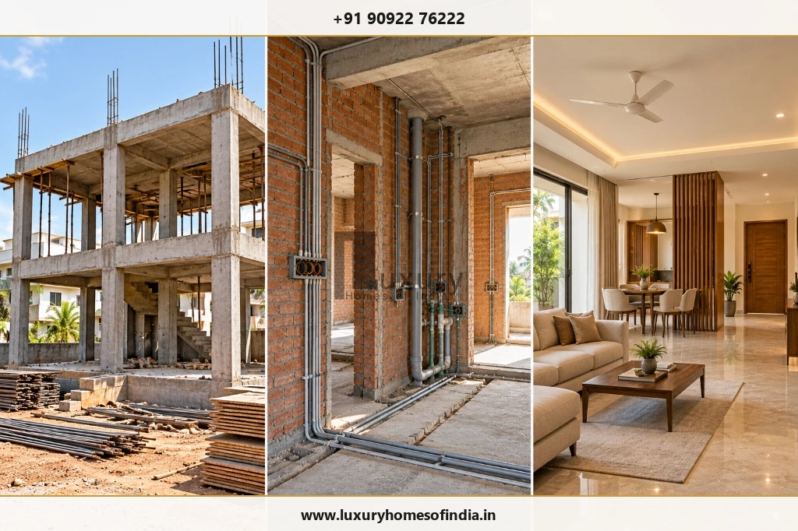
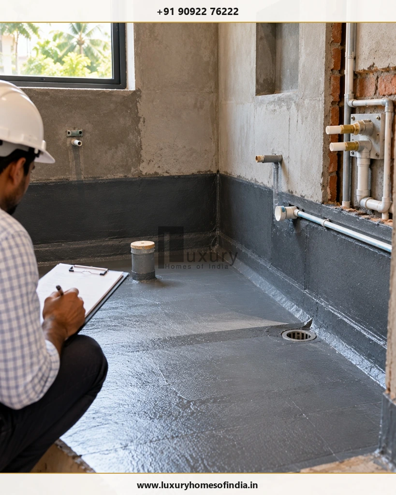

How Long Does It Take to Build a 1,500 Sq. Ft. House in Chennai?
Direct Answer
Building a 1,500 sq. ft. house in Chennai does not have one fixed completion timeline. The duration depends on whether the area covers one floor or multiple floors, whether design and approvals are complete, the structural requirements, the finishes selected and how construction activities are coordinated. A useful estimate separates pre-construction work from on-site construction and handover. Before accepting a completion date, establish the project's start milestone, confirm what the contract includes and identify activities that depend on earlier work. Structural construction, concealed services, waterproofing, flooring and interior installation must be scheduled in the right sequence, although some activities can overlap safely. The most reliable timeline is a written, project-specific programme with milestones, material lead times, inspection points and a process for managing changes. This guide explains how to prepare that programme for a 1,500 sq. ft. home in Chennai without treating a generic estimate as a guaranteed handover date.

1. What Determines the Construction Time for a 1,500 Sq. Ft. House?
The first step is to define what 1,500 sq. ft. means in the proposed project.
It could refer to the entire built-up area of a single-floor house, the combined area of a ground-plus-one (G+1) home, or the area of each floor in a larger residence. These are different construction scopes and should not be assigned the same schedule automatically.
Three questions help establish the right starting point:
- What is the floor configuration? A single-floor home and a two-storey home have different structural sequences and site activities.
- What is included in the project? A basic civil construction scope differs from a contract that includes fixed interiors, custom joinery, landscaping and external development.
- What has already been completed? A project with finalised drawings and required approvals can be scheduled differently from one that is still in design development.
The following table provides a planning framework without assigning unverified durations to different house types.
| Project Condition | Scheduling Implication |
|---|---|
| Single-floor house | Plan foundation, structural work, services and finishes for one level. |
| G+1 house | Account for upper-floor structure, staircase, additional coordination and finishes across levels. |
| Extensive custom interiors | Allow for detailed design coordination, manufacture and delivery of customised items. |
| Design or approvals incomplete | Include these activities before setting a dependable construction start date. |
| Difficult or unexpected site conditions | Reassess the foundation scope and dependent activities before committing to a completion date. |
The floor area is only one part of the calculation. The proposed design, site conditions and agreed scope are equally important when developing a realistic programme.
2. Construction Duration Versus Total Project Duration
One of the most common planning mistakes is comparing two completion estimates without checking when their timelines begin.
A builder may quote a construction period starting from foundation work, while a homeowner may be thinking about the entire journey from appointing a designer to moving into the completed house.
These are not equivalent.
A complete project schedule should distinguish three broad periods:
Pre-Construction
This phase covers requirements, site information, architectural design, structural and service coordination, specifications, cost planning and applicable approvals. The exact scope and duration depend on the project. Do not assume that the approval process is included in a builder's construction estimate.
On-Site Construction
This phase covers the approved construction scope, from setting out and foundation work through the structure, walls, building services and finishes. The sequence depends on the drawings, construction method, inspections and readiness of each work area.
Testing, Corrections and Handover
The final period includes checking installed systems, correcting outstanding defects, completing the agreed scope and preparing relevant handover documentation. For a move-in-ready home, confirm whether kitchens, wardrobes, lighting, external works and other fixed installations are included in the completion commitment.
Planning Rule
Ask for a written programme that states its start date or start milestone, included activities, exclusions and handover requirements.
3. Stage-by-Stage Construction Schedule
The following sequence can be used to build a project-specific programme. It is a planning framework, not a measured schedule for a completed LHI project.
| Stage | Main Activities | What Must Be Confirmed |
|---|---|---|
| 1. Design and planning | Brief, layouts, structural coordination, specifications | Drawings and scope are sufficiently finalised |
| 2. Approvals and readiness | Required permissions, site access, procurement preparation | Applicable approvals and start conditions are satisfied |
| 3. Site preparation | Setting out, excavation and preparation | Site information and setting-out checks are complete |
| 4. Foundation and plinth | Foundation construction and related structural work | Required inspections and construction checks are completed |
| 5. Main structure | Columns, beams, slabs and staircase where applicable | Structural sequence and required curing and formwork procedures are respected |
| 6. Walls and services | Masonry, electrical conduits and plumbing routes | Openings and service locations are coordinated |
| 7. Waterproofing and finishes | Waterproofing, plastering, flooring and related work | Pre-cover inspections and applicable water tests are completed |
| 8. Installation and completion | Doors, windows, fixtures, paint and agreed interiors | Products are delivered and installation areas are ready |
| 9. Final inspection | Testing, defect correction and handover | Scope, outstanding items and handover records are reviewed |
Not every activity must wait for the entire preceding stage to finish. For example, procurement and some design coordination can happen while construction progresses. However, dependent installation work should not start before its required substrate, services, inspections or preceding tasks are ready.
How to Turn the Sequence into a Realistic Schedule
For each stage, record:
- The planned start and finish dates.
- The work that must be completed first.
- The materials, drawings or approvals needed.
- The inspection or sign-off required before the next activity.
- The person responsible for the milestone.
- Any unresolved decision that could delay progress.
This approach makes the schedule more useful than a list of month numbers alone.
4. A Month-by-Month Planning Example

A homeowner can organise the project into broad planning windows, then assign actual dates after the contractor and technical team review the drawings and site conditions.
Planning Window A — Before Site Work
Finalise requirements, drawings, structural coordination, specifications and applicable approvals. Identify materials that need early ordering.
Planning Window B — Foundations and Structure
Follow the approved sequence for setting out, foundation work, plinth and structural construction. Schedule the relevant inspections and allow for required curing and safe formwork removal.
Planning Window C — Walls and Building Services
Coordinate masonry, electrical conduits, plumbing routes, openings and service provisions. Resolve discrepancies before affected work is concealed.
Planning Window D — Finishes and Installation
Plan waterproofing, flooring, painting, doors, windows, fixtures and fixed interiors around site readiness and product delivery.
Planning Window E — Testing and Handover
Complete applicable system checks, correct defects, reconcile outstanding items and assemble the agreed handover documentation.
These windows are deliberately not assigned fixed month numbers. The programme for an actual house must account for the number of floors, construction method, approved design, workforce, material lead times and scope of interiors.
A contractor should convert these work packages into dated milestones once the necessary project information is available.
5. What Can Delay House Construction in Chennai?
The same built-up area can require different schedules because site and project conditions vary.
Building Approvals and Incomplete Drawings
Missing documents, drawing revisions or unresolved design decisions can postpone the start of work or interrupt activities already in progress. Identify the applicable approval route early and confirm the relevant start conditions.
Soil and Foundation Requirements
Actual ground conditions may affect excavation, foundation design and the construction sequence. Use the project-specific site information and approved engineering design rather than assuming a standard foundation programme.
Rain and Site Conditions
Rain can affect excavation, site access, exposed materials and certain external activities. Its impact depends on the stage of construction, drainage, site protection and the work being undertaken.
Architectural Complexity
Large openings, customised staircases, unusual structural elements and detailed elevations can increase coordination requirements. Freeze the relevant design decisions before dependent work begins.
Material Procurement
Custom windows, doors, tiles, sanitaryware, joinery and other specified products may require manufacturing or delivery lead time. Confirm selections and delivery dates early enough to avoid interrupting installation.
Changes During Construction
Relocating a wall, changing window dimensions or moving electrical and plumbing points can trigger redesign, additional procurement and rework. Record each change and its effect on cost and schedule before approval.
Trade Coordination
Civil, electrical, plumbing, carpentry, painting and other teams need clearly defined work areas and dependencies. A delay in one activity can affect several later tasks if the programme does not allow for coordination.
6. How to Keep a House Construction Project on Schedule

A realistic schedule depends on decisions and checks made before they become urgent.
Finalise the drawings:
Coordinate architecture, structure, electrical and plumbing requirements. Resolve important dimensions, openings, service routes and fixed interior layouts before the relevant work begins.
Prepare a clear scope and BOQ:
A Bill of Quantities (BOQ), specification schedule and written scope help clarify what the contractor is expected to provide. Identify exclusions, allowances, owner-supplied items and the process for approving additional work.
Track long-lead materials:
Create a procurement register showing each required product, specification, selection deadline, supplier commitment, delivery date and installation dependency.
Inspect before covering work:
Arrange relevant checks for structural work, concealed services and waterproofing before dependent finishes proceed. The required inspection and testing process should follow the project design and applicable technical requirements.
Hold regular progress reviews:
Use a short weekly review to record:
- Work planned versus work completed.
- Upcoming milestones and dependencies.
- Material deliveries that could affect progress.
- Decisions awaiting homeowner approval.
- Quality issues and corrective actions.
- Changes to the forecast completion date.
Document schedule changes:
When a delay occurs, identify the affected activities and determine whether other suitable work can proceed without compromising quality or safety. Do not promise that every delay can be recovered. Update the schedule and communicate the revised handover forecast clearly.
7. How Construction Time Affects Your Budget
The construction schedule is also a financial planning tool.
A delayed move-in date can affect temporary accommodation, financing arrangements, storage, relocation and other commitments. These costs depend on the homeowner's circumstances and should be assessed individually.
Before starting, identify the following budget categories:
- Design and engineering fees.
- Applicable approval and utility charges.
- Core construction and structural work.
- Electrical, plumbing and other building services.
- Flooring, doors, windows and fixtures.
- Kitchen and fixed interior installations.
- Compound wall, gate and external development.
- Temporary accommodation and relocation, where relevant.
- A contingency for unforeseen project conditions.
Do not assume that a per-square-foot quotation covers every requirement for a completed, move-in-ready home.
For related planning, see our comprehensive guide on Luxury Home Construction Cost Per Sq Ft in Chennai: What Your Quote Should Include. Also review LHI's house construction cost guidance to understand why specifications, site conditions and scope affect project planning.
8. A Practical Construction Timeline Checklist
Before accepting a proposed completion date, use this checklist with your architect or contractor.
Project Readiness Checklist
A completed checklist does not guarantee a particular completion date. It helps ensure that the programme is based on known requirements rather than assumptions.
9. Frequently Asked Questions
How long does it take to build a 1,500 sq. ft. house in Chennai?
There is no universal duration. The construction period depends on the floor configuration, site conditions, approvals, design complexity, materials, workforce coordination and included finishes. Request a written schedule based on the actual project.
Is a 1,500 sq. ft. single-floor house quicker to build than a G+1 house?
It may be, but the difference depends on the structural design, construction method and scope. Compare the actual programmes rather than assuming a fixed difference based only on floor count.
Can a 1,500 sq. ft. house be completed in six months?
A six-month target should not be assumed to be feasible for every project. It needs to be assessed against the actual design, approvals, structural requirements, curing and inspection needs, procurement and finish scope.
Does the construction period include building approval?
Not necessarily. Confirm whether the programme begins at appointment, design completion, approval, site mobilisation or foundation work. Required permissions and other start conditions should be accounted for separately where applicable.
Which stage usually creates scheduling problems?
Potential problem areas include incomplete drawings, approval dependencies, material deliveries, changes, concealed-service coordination and rework. The most important risk varies by project.
Can interior design and material ordering start before civil work is complete?
Yes. Design coordination, product selection and procurement can often begin earlier. Actual installation should occur when the relevant areas and preceding work are ready.
How should I monitor my contractor's progress?
Use an agreed written programme with milestone dates, dependencies, quality checks, procurement commitments and a process for recording changes. Review actual progress regularly and document revised forecasts.
What information is needed for a reliable construction estimate?
Provide the plot location, floor configuration, total built-up area, proposed drawings, approval status, structural information, finish specifications and a clear list of included and excluded works.
10. Planning a 1,500 Sq. Ft. Home with Luxury Homes of India
The best starting point is not a generic promise about how quickly a home can be built. It is a clear understanding of your plot, proposed design, construction scope and priorities.
Prepare your floor configuration, approximate built-up area, drawing status and preferred level of finishes before discussing the project. These details provide a better basis for assessing the work involved and developing a realistic programme.
Discuss Your Residential Construction Requirements with LHI
Planning an independent house or luxury villa in Chennai? Our architectural, engineering, and project management teams provide milestone-based execution and transparent construction scheduling.
Website: https://luxuryhomesofindia.in/
Phone: +91 90922 76222
Email: info@luxuryhomesofindia.in
Corporate Office: #85, 4th Floor, Lotus Tower, Guindy, Chennai – 600032
Disclaimer: This article provides general planning guidance, not a project-specific construction promise. Actual durations depend on the design, approvals, site conditions, specifications, procurement, weather, workforce coordination and other project circumstances. Confirm the agreed scope, milestones and completion terms in the project documentation.
Written by: LHI Editorial Team
Reviewed by: LHI In-House Technical Team